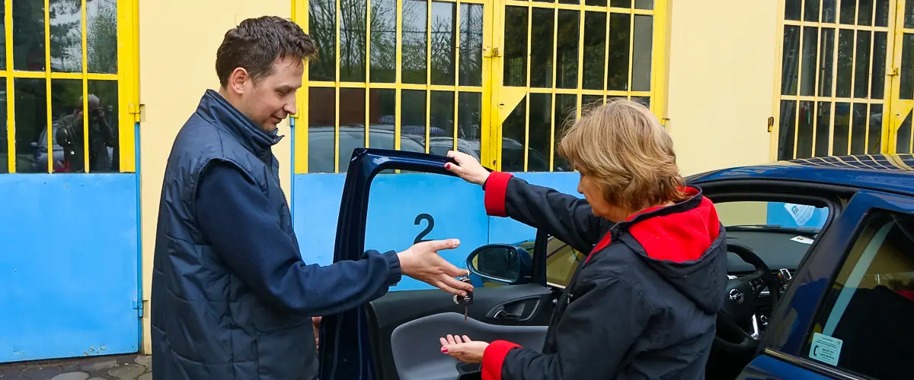
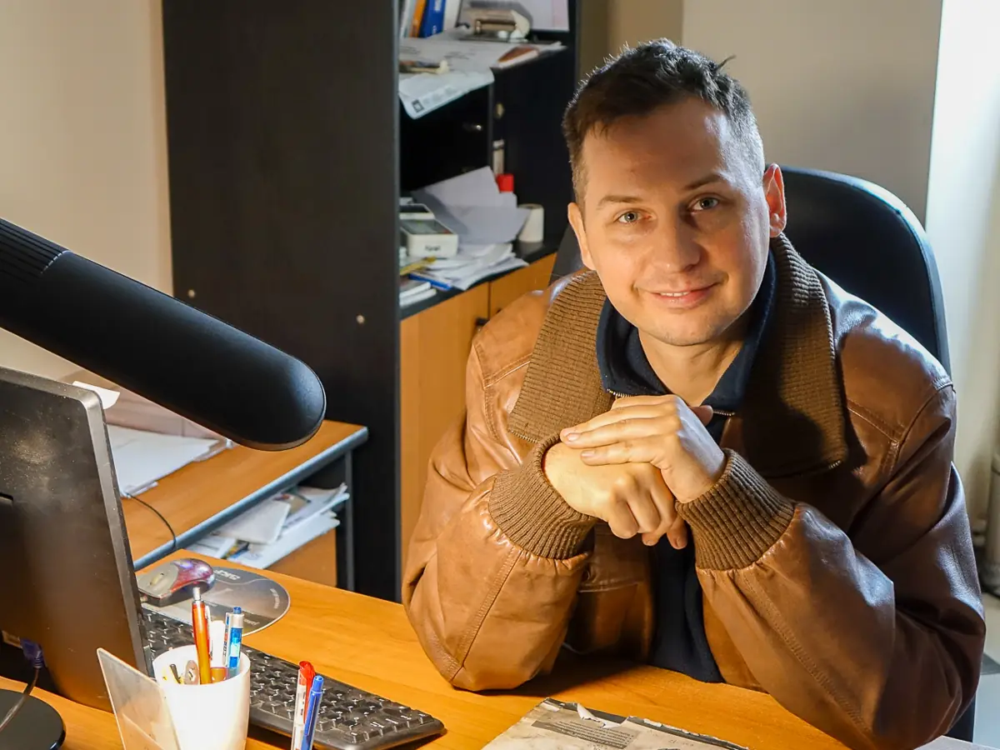
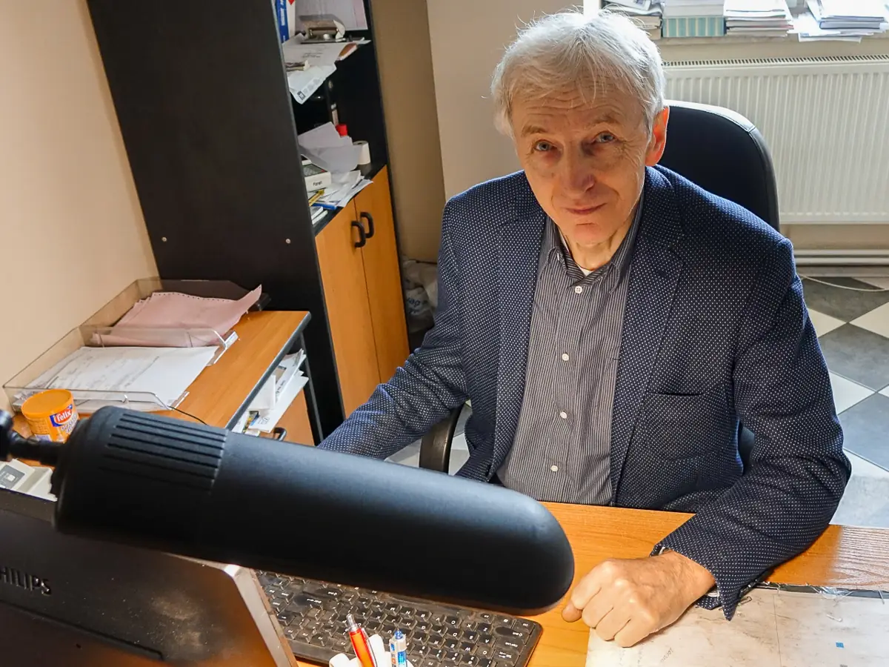

About us
The Smakowski family business, helping drivers for over 20 years.
Two engineers, one workshop
AUTO-REMAR is run by Bartosz Smakowski and Marek Smakowski. We both hold an MSc in engineering and specialise in Opel repairs, though we fix other makes too.
Being a family business lets us combine fair prices with high quality. 86% of our customers come back with their next car or next repair.
- You can watch the repair in person
- Prices for larger repairs are open to negotiation
- Our own spare parts store means you get the car back sooner
- A detailed database with your car's history
- Tyre service and air conditioning refills (R134a)
- Alternators, starter motors, seized bushings and bearings

Who repairs your car


Experts for the Auto Świat guide
We are experts for the Auto Świat guide, sharing our workshop know-how with readers of one of Poland's most popular car magazines.